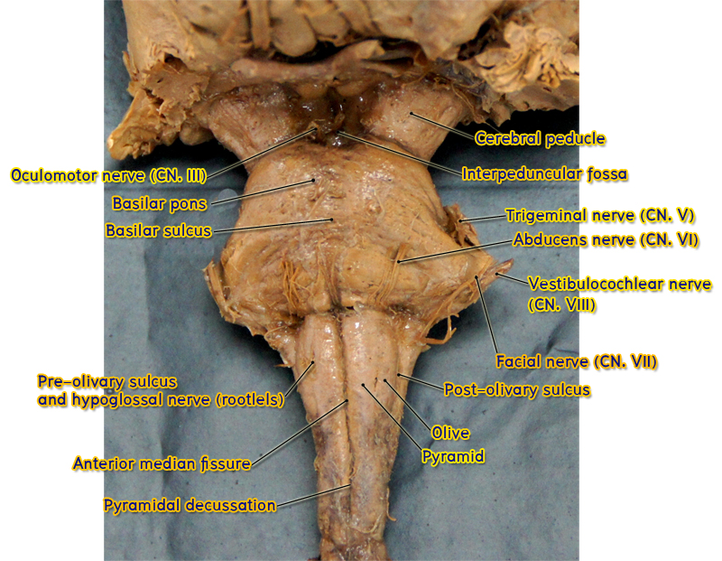

Midbrain
ศึกษาจาก isolated brainstem และ whole brain ร่วมกับ atlas ให้ชี้แสดงส่วนต่าง ๆ ของ midbrain ดังต่อไปนี้
Ventral surface

- Cerebral crus (crus cerebri) เป็นส่วนหน้าสุดของ cerebral peduncle แต่ละข้าง
- Oculomotor nerve roots โผล่ออกมาจาก medial surface ของ cerebral crus แต่ละข้าง
- Interpeduncular fossa เป็นแอ่งที่อยู่ระหว่าง cerebral crus ทั้งสองข้าง
Dorsal surface

- Corpora quadrigemina เป็นเนินนูน 4 ลูก (2 คู่) ที่อยู่บริเวณ tectum ของ midbrain คู่ที่อยู่ superior กว่าเรียกว่า superior colliculus คู่ที่อยู่ inferior กว่าเรียกว่า inferior colliculus
- Pretectal area เป็นบริเวณแคบ ๆ ที่อยู่ superior กว่า superior colliculus เล็กน้อย
- Trochlear nerve roots โผล่ออกมาจาก superior medullary velum ซึ่งเชื่อมระหว่าง medial edges of superior cerebellar peduncle บริเวณ just caudal to inferior colliculus